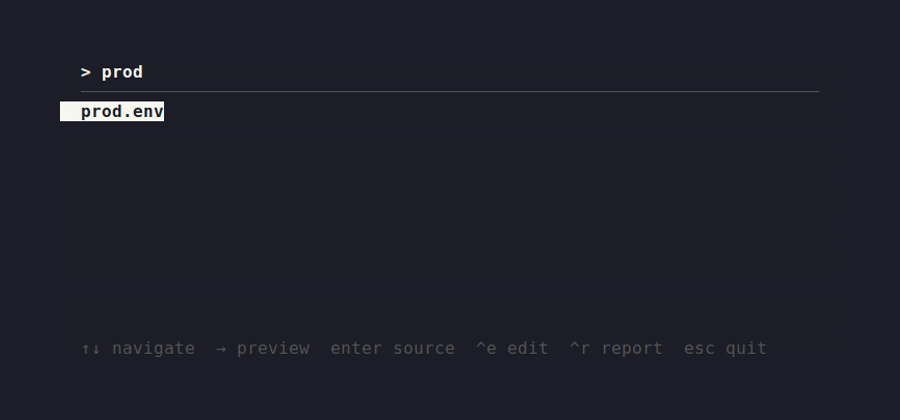
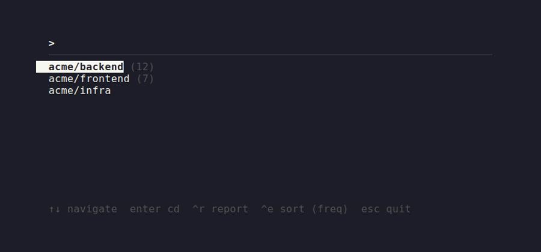
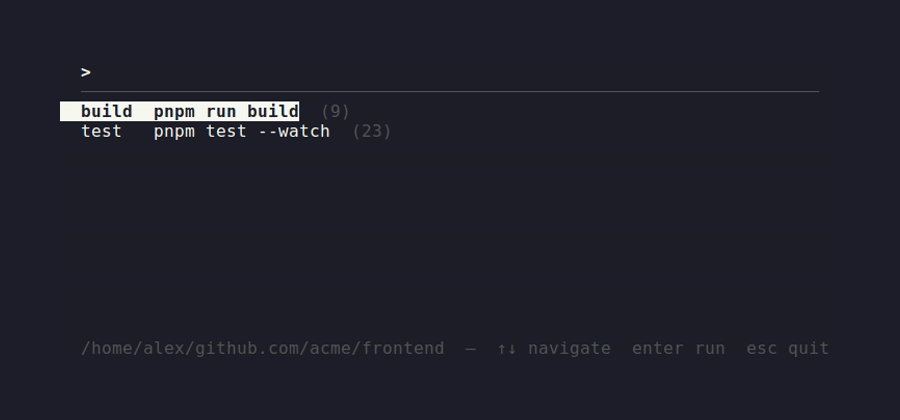

Three tiny, single-binary terminal tools: fuzzy-pick and load env files, jump straight into any cloned repo, and run the right command for whatever directory you're in. No plugin frameworks, no config to hand-edit — just three small Rust binaries.
curl -fsSL https://ee.u11g.com/install.sh | sh
eeStop hand-source-ing env files. Fuzzy-pick one from
~/.config/envvars/ and load it into your shell in two
keystrokes.
eeeJump to any cloned repo under ~/github.com/<org>/<repo>
without cd gymnastics or remembering exact paths.
rrRemember the right command per project — pnpm dev,
go run ./cmd/server, whatever — and run it with a single
keystroke from that directory.
ee — env file pickerA full-screen TUI over ~/.config/envvars/*.
Selecting a file prints source <path> for your shell
to evaluate. Tracks most-recently-used order and per-file usage counts.

| Key | Action |
|---|---|
| Type | Filter list |
| Backspace | Delete last character |
| ↑ / ↓ | Move selection |
| → | Preview file contents |
| Enter | Source selected file |
| Ctrl-E | Open selected file in $EDITOR |
| Ctrl-R | Show usage report |
| Esc | Quit without output |
eee — repo pickerDiscovers repos two levels deep under
~/github.com/<org>/<repo> — no registration
step. Selecting one prints cd <path>. Sorts by
3-day usage frequency by default, toggle to alphabetical.

| Key | Action |
|---|---|
| Type | Filter list |
| ↑ / ↓ | Move selection |
| Enter | cd into selected repo |
| Ctrl-R | Show usage report |
| Ctrl-E | Toggle sort: recency vs. alphabetical |
| Esc | Quit without output |
rr — per-directory command shortcutsSet a default (and any number of named) commands per
directory. Bare rr runs the default, or opens a picker if
there's no default but several named commands. Lookups walk up to the
nearest configured ancestor, so one config at a repo root covers every
subdirectory.

rr # run the default command for this directory rr <name> # run a named command, e.g. rr build rr <name> [args…] # run it with extra args, e.g. rr test --watch rr set <command…> # set/replace the default command for this directory rr set <name> -- <cmd…> # set/replace a named command rr rm [name] # remove the default (or named) command rr rm --all # remove every command for this directory rr list [--all] # list commands for this dir (or all dirs) rr edit # open the config file in $EDITOR rr report # show a usage report
curl -fsSL https://ee.u11g.com/install.sh | sh
Downloads the right release archive for your platform (Linux or
macOS), verifies its checksum, installs ee/eee/rr
to ~/.local/bin, and — unless skipped — wires up the shell
integration below automatically.
--no-shell (skip rc-file editing), --bin-dir DIR
(custom install location), --uninstall. Pin a version with
EE_VERSION=v0.2.0.
git clone https://github.com/urbanisierung/ee.git cd ee make install # builds and copies to ~/.local/bin # or, without cloning: cargo install --git https://github.com/urbanisierung/ee
Either way, this only installs the binaries — you still need the
shell integration below for ee/eee.
Add to ~/.bashrc / ~/.zshrc:
ee() { eval "$(command ee "$@")"; }
eee() { eval "$(command eee "$@")"; }
or to ~/.config/fish/config.fish:
function ee; eval (command ee $argv); end function eee; eval (command eee $argv); end
rr needs no wrapper — it runs directly.
ee and eee pick a file/repo and then need
your current shell to source a file or
cd into a directory. A child process can't do that to its
parent shell — that's an OS-level restriction, not a limitation of these
tools. So each binary prints the command it wants run
(source <path> / cd <path>) to
stdout, and the wrapper function evaluates it in your shell. The install
script sets this up automatically; once it's there you just type
ee / eee like any other command.
rrcd ~/work/api && rr set pnpm dev cd ~/work/worker && rr set pnpm run start:force cd ~/work/api && rr # runs: pnpm dev
| Tool | Data | Location |
|---|---|---|
ee | env files, MRU history, usage counts | ~/.config/envvars/ |
eee | history, usage counts | ~/.config/eee/ |
eee | repos it picks from | ~/github.com/<org>/<repo> |
rr | commands, usage counts | ~/.config/rr/ |
Nothing is written outside these directories.